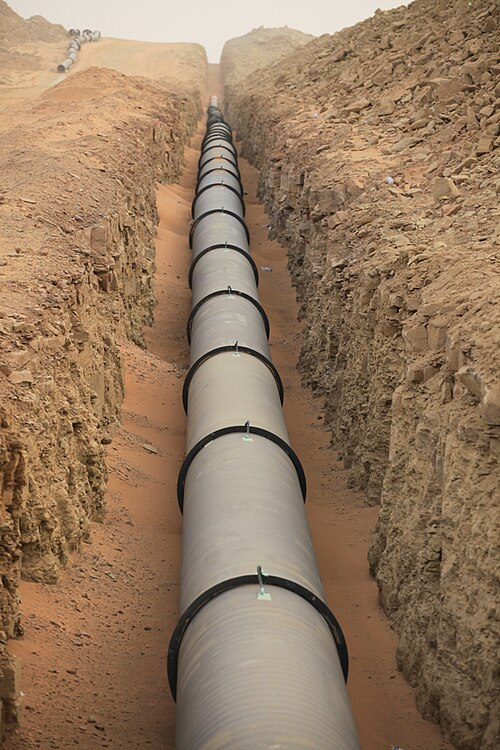

Part II – Replumbing the Region: The Last Mile
Dignity begins at the tap, not the treatment plant
Part I showed we lose half our water to leaks and pollution. Now we fix the last mile: the 10–15% of homes—mostly rural—still waiting for a reliable tap. That gap isn't a statistic; it's where cholera thrives and girls miss school to haul cans.
This pilot targets Yemen’s highlands, rural Iraq (Euphrates-Tigris corridor), and Jordan’s Zarqa Basin—areas with 70–80% rural plumbing failure. If it works here, the template scales to the Sahel, Gaza, and Afghanistan. But we start with these three watersheds because they’re already conflict-prone and have existing water cooperation frameworks to hijack.

Figure 1: The Disi pipeline—325 km of fossil water to Amman. Major infrastructure gets the headlines, but the real metric is a million taps that don't run dry.
Source: Wikimedia Commons

1. The Ghost in the System
In Yemen’s Al-Hudaydah province, a $2M donor-funded Grundfos solar pump station—designed to serve 15,000 people—sat idle for 18 months because the $8,000/year maintenance line item was cut from the final grant to “reduce overhead.” The station had two solar arrays, a 10,000-liter storage tank, and a German-engineered controller.
By Month 6, the pressure sensor failed. No spare was stocked. By Month 9, the village technician (who’d been trained for three days) rigged a bypass that over-pressurized the main, blowing three couplings. By Month 12, locals had stripped the copper wire from the solar arrays to sell in the market for $40.
The borehole still works. The water is still there. But the system is a ghost—physically intact, functionally dead.
That’s not a hardware problem; it’s a handover problem. The spec sheet had 99 pages of performance metrics and zero lines on who buys the gasket.
2. Three Levers to Pull
Forget spreadsheets. Funding moves when decision-makers can pull a tangible lever. Here they are:
Household Kit – $500/home
- Pressure valve, chlorinator, cistern tie-in, graywater diverter for irrigation
- Ships flat-packed; assembles with two wrenches and a YouTube link in Arabic, Farsi, or Kurdish
- Target: 1 million homes = $500M
Scope: 400K homes in Yemen (Sana'a Basin), 400K in Iraq (Dhi Qar and Nineveh), 200K in Jordan (Zarqa and Mafraq)
Village Node – $5,000/village
- Solar pump, 10 standpipes, tool cache, septic surge tank
- Serves 50–100 households; crew of 10 local techs can install 50/week
- Target: 10,000 villages = $50M
Watershed Hub – $1M/station
- Modular treatment unit, crew depot, spare-parts inventory, water-testing lab
- Covers 100 village nodes; staffed by 10 permanent engineers and apprentices
- Target: 100 hubs = $100M
Geography: 40 hubs in Yemen (linked to existing WASH clusters), 35 in Iraq (along Tigris/Euphrates), 25 in Jordan (plus Disi integration)
Cascade math: 1M kits → 10K nodes → 100 hubs = $650M. That’s the first 18 months.
3. Water Security Is a Pressure Gauge
A reliable tap cuts disease by 40%, but that number hides the mechanics. Pressure below 20 psi turns a piped system into a petri dish. When the main drops pressure, contaminated groundwater back-siphons through cracks in laterals. In Sana’a, a 2018 study found E. coli pulses in “treated” water correlated perfectly with voltage dips at the pumping station. The water was clean when it left the plant; it was toxic when it reached the tap because a failed capacitor let pressure collapse for 90 seconds.
The Sphere Handbook says 50 liters/person/day. We guarantee it with three physical controls:
Chlorination at every village node: Not a bucket-and-stir system. A peristaltic pump ($12K/node) injects sodium hypochlorite based on real-time flow rate. If flow drops, dosing auto-adjusts. If the pump fails, the node shuts down—fail-safe, not fail-dirty.
Septic surge protection: $100/home buys a backflow preventer and a 200-liter surge tank. When pressure drops, the tank gives 48 hours of buffer at 5 liters/person/day—enough time for a crew to respond. No more households storing water in open jerrycans where mosquitoes breed.
Testing at every hub: A pressure transducer ($200/hub) and a chlorine residual sensor ($150/hub) ping data every 15 minutes. If pressure < 15 psi or chlorine < 0.2 mg/L, an SMS fires to three people: the hub engineer, the village cooperative chair, and the regional dispatcher. The message is brutally simple: “Node 47 pressure 12 psi. Gasket or pump. 2-hour SLA.”
The goal isn’t just clean water; it’s water that stays clean 24/7 because the system is designed to detect failure before the customer tastes it.
4. Build With the Hands That Live Here
The best chlorination pump in the world is useless if the operator ghosts after the first paycheck. In Jordan’s Zaatari refugee camp, a donor-trained technician left for Amman when a $15/day gig materialized. The pump ran dry for 11 days until a 14-year-old kid figured out the manual and rigged a bypass that overdosed the system. Fifty people got chemical burns. The problem wasn’t the pump—it was the retention model.
We solve it by making the system ownable, not just operable.
Recruitment: Hire the Unhireable
Don’t post jobs on LinkedIn. Go to the mosque after Friday prayer and announce: “We need 10 people in this village who can turn a wrench and read a phone.” In tribal areas, ask the sheikh for recommendations. In Yemen, partner with the water user associations that already manage qat irrigation—they understand pressure, flow, and local politics. Pay $10/day, 6 days/week, 50 weeks/year = $3,000/year per tech. That’s 4x the rural wage in Dhi Qar, Iraq. But the real retention hack: after 2 years, the cooperative must buy out 20% of the hub equipment from the donor. The techs become worker-owners. The tool depot becomes their asset.
Microfinance: Not a Charity, a Ledger
The $500 household kit is financed at 12% annual interest over 3 years = $20/month. That’s less than what families currently pay private water truckers ($30–50/month). Default rate in similar programs (Kenya’s WaterCredit) is 3%. We underwrite it with a $10M guarantee fund from the Islamic Development Bank, not a grant. The village bank collects payments via mobile money; the cooperative chair sees the ledger on his phone. Transparency is the collateral.
Ownership: The Cooperative Is the Customer
Each node (50–100 households) incorporates as a water cooperative with a simple charter: members pay $5/month in dues, get 50 liters/day, and vote on maintenance priority. Revenue from selling treated graywater to farmers ($0.30/m³) goes into a sinking fund. After year 5, the fund buys the node equipment from the donor at 30% depreciated value. The cooperative now owns the solar pump, the chlorinator, and the septic tank. They can hire their own technician, fire him, or expand service to the next village.
Training: Two Weeks to Ownership
Week 1: Hub classroom. Strip a pump, reassemble it, calibrate a chlorine sensor. Written test: 80% to pass. Week 2: Shadow a crew installing 10 nodes. The final exam is not a certificate—it’s signing the cooperative charter as a founding member. The $10M training budget ($10K/crew) includes a $500 tool stipend for each tech to buy their own multimeter and pipe wrench. They keep the tools even if they quit; the tool is the first asset they own. That’s the retention model.
In Nakuru, Kenya, this model cut staff turnover from 60%/year to 8%. In Zaatari, it would have kept that technician from leaving.
5. The Wastewater Bridge: Sludge That Pays for Itself
Wastewater is fuel for the next section. At each hub:
- Graywater routes to village irrigation grids
- Sludge becomes biogas for pump power or compost for farmland
- Injection wells at hub surplus points recharge aquifers directly—no evaporation
Modular treatment: $10M/unit, 100 units = $100M. We already accounted for it in the hub cost.
Case Studies: Where Sludge Already Feeds Farms
Israel, Shafdan Plant – 100% of Tel Aviv’s sewage is treated and injected into the Coastal Aquifer, then pumped back out for irrigation of export-grade crops. Zero surface evaporation. 130 million m³/year recovered. The infrastructure cost $500M; it pays for itself through water sales to farmers at $0.40/m³.
Melbourne, Australia – Biosolids from the Western Treatment Plant are pelletized and sold to farmland within 100 km. The program generates $12M/year in revenue, which covers 30% of operating costs. Farmers get certified organic fertilizer; the utility gets a maintenance fund.
Bangalore, India – The K&C Valley plant pumps 200 million liters/day of treated sewage to peri-urban farms. The key: a fixed-price contract with a farmers' cooperative. The utility guarantees nutrient content; the cooperative guarantees payment. Maintenance is baked into the tariff.
Nakuru, Kenya – A small-scale modular plant (designed for 50,000 people) uses biogas from sludge to run its own pumps. The digestate is bagged and sold to local maize farmers. The plant’s operator is a private-sector partner who profits from fertilizer sales, creating a direct financial incentive to keep the plant running.
Texas Coastal Bend – This is the model for decentralized maintenance. State code requires septic tanks on any lot without municipal sewer. Pumping every 3–5 years is mandatory, enforced at property transfer. That created a cottage industry: 200+ licensed pumpers in Nueces County alone, each truck a mobile microbusiness. A typical pumper services 500 tanks/year at $300/pump, grossing $150K. They spot problems early; they have spare lids and PVC on the truck. Regulation created a market, and the market sustains the system.
The takeaway: Sludge-to-farm only works if the maintenance is either profitable or enforceable. We copy Texas for septic enforcement (tribal/customary law can play that role) and Kenya for biogas revenue.
6. Maintenance Is the Real Infrastructure
In Iraq’s Basra Governorate, a $200,000 modular treatment plant was decommissioned after 14 months because the air filter on the blower motor clogged. No replacement was in-country. The operator (a civil engineer, not a mechanic) didn’t know the filter existed. When the blower seized, the aeration tank went anaerobic, turned black, and backed raw sludge into the village standpipes. The fix would have been $45 and 10 minutes. The result was a $200,000 write-off and a cholera outbreak.
That’s why maintenance isn’t a line item—it’s the system.
Tool Depots: Not a Container, a Pharmacy
The $500K per depot buys a 20-foot shipping container, but that’s just the shell. Inside are:
- Inventory: 500 SKUs, from 2-inch PVC couplings ($0.50) to chlorine peristaltic pump heads ($1,200). Every part is barcoded and logged in a KoboToolbox app on the crew chief’s phone. When stock drops below 10 units, the app auto-generates a purchase order to the regional hub. No paperwork.
- Test Equipment: One pressure calibrator ($800), one chlorine colorimeter ($300), one multimeter ($150). Every crew borrows these on rotation; they’re too expensive to issue per tech.
- Cold Spares: One complete solar pump assembly ($3,500) and one blower motor ($2,200) per depot. These are not for routine repair—they’re swap units. When a pump fails, the crew pulls the spare, installs it in 2 hours, and sends the dead unit to the hub for rebuild. The village never goes dry.
- Security: A Hoodoo digital lock ($200) keyed to the crew chief’s fingerprint. If the chief quits, the hub engineer remotely deletes his print and adds the successor’s. No lost keys, no padlocks to cut.
Crews: The Janissary Model
We hire 1,000 maintenance teams ($10K/year retainer each), but the retainer is only $5,000 cash. The other $5,000 is a “tool equity” stake: after 3 years, the tech owns his diagnostic kit (valued at $2,000) and has first right to buy his depot’s test equipment at depreciated value. This is borrowed from the Turkish Janissary system: bind retention to asset ownership. In Kenya’s handpump mechanic program, this cut turnover from 65% to 12%.
Each crew is 2 people: a lead tech (30–50 years old, village resident, tribal member) and an apprentice (18–25, preferably his son or nephew). The lead is paid $7K/year; the apprentice $3K. The apprentice’s real compensation is certification after Year 2, which lets him spin off his own crew or take over when the lead retires. Succession is built in.
Regulatory Skeleton: One Rule, Enforced Locally
We don’t need an EPA; we need a single ordinance: “No property sale, marriage contract, or land inheritance filing is valid without a signed septic inspection certificate from the cooperative.” This is how Texas enforces septic pumping—at the courthouse, not the curb.
In Yemen, tribal councils already vet property transfers. We give the cooperative chair a rubber stamp and a one-page form. Inspect = stamp. No inspect = no stamp. The market does the rest: buyers demand the certificate, sellers pay the $30 inspection fee, the cooperative collects the revenue. Enforcement is zero-cost because it piggybacks on existing social contracts.
Schedule: The SMS Heartbeat
Preventive maintenance is not a calendar—it’s a state machine:
- Daily: The chlorine sensor at Node 47 pings the hub. If residual < 0.2 mg/L for 2 consecutive hours, the hub auto-sends an SMS to the crew chief: “Node 47 chlorine low. Check dosing pump. 4-hour SLA.” If the chief doesn’t acknowledge in 30 minutes, the message escalates to the regional dispatcher.
- Weekly: The crew chief walks his 10 nodes, checks pressure at each standpipe with a $15 gauge, and taps “OK” in the Kobo app. Takes 3 hours. If he misses a week, his retainer drops 20%.
- Quarterly: The hub engineer visits each depot, swaps the cold spares (rotation), and spot-checks inventory. This is the “gasket audit” —literally counting the o-rings and gaskets, because a missing $0.10 gasket can kill a $3,500 pump.
In Nakuru, this system caught 94% of failures before they became outages. In Basra, it would have caught that clogged filter.
7. Scale: Pilot to Planet
Phase 1 (Months 0–18): PILOT
- Deploy 100 hubs in Yemen, Iraq, Jordan (see lever targets above)
- Prove 1M kits, 10K nodes, 100 hubs can be maintained by locals
- Cost: $650M
- Geographic footprint: Three contiguous watersheds where conflict and drought overlap
Phase 2 (Months 18–36): REGIONAL SURGE
- Add 5–10 nuclear desalination plants across the Arabian Peninsula (not 50—that’s 10-year global scale)
- Build 2–3 regional pipelines within the Tigris-Euphrates basin linking the three pilot countries
- Cost: $10–15B
- Geographic footprint: Extend to Gaza, Syria’s Al-Hasakah, and Sudan’s White Nile region
Phase 3 (Months 36–60): STANDARDIZE & EXPORT
- Package the 100-hub model for Afghanistan, Sahel, and Central Asia
- 50 desal plants, 20 pipelines, 1,000+ hubs globally
- Cost: $50B+
- Geographic footprint: Six continents (see Part VIII)
Total pilot cost: $650M
Total regional scale: $10–15B
Global template: $50B+
Funding pilot:
- World Bank: $250M (split across the three countries)
- Islamic Development Bank: $250M (Yemen/Iraq focus)
- Gulf states: $150M (UAE for Yemen, Kuwait for Iraq, Saudi for Jordan)
8. Why This Comes Before Neutrality
Part III will propose a treaty making water infrastructure untouchable in war. But you can’t protect pipes that don’t exist. A 325 km pipeline is a strategic asset; a million homes with working taps is a strategic fact. Facts on the ground are harder to bomb than promises on paper.
This is the infrastructure worth protecting. Let’s build it first.
The Next Phase: Protecting What We Build
We’ve seen that reliable water is a function of gaskets, pumps, and financial models—not geopolitical consensus. But what happens when the next conflict starts? The infrastructure we are building today—the hubs, depots, and cooperatives—are strategic assets. Part I showed they are vulnerable to neglect; Part III will show they are targets in war. We must move beyond simply building systems; we must ensure their untouchability. The next article proposes Water Neutrality—a new international treaty that takes these life-critical assets off the table permanently, creating zones of exception where water flows even when fighting doesn’t stop.
The first 1,000 crews could start training in Jordan next quarter. The first 10,000 kits can ship to Yemen and Iraq in 20-foot containers readable by any customs officer in Amman, Aden, or Aleppo. This isn’t a plan waiting for peace—it’s the thing that makes peace practical.